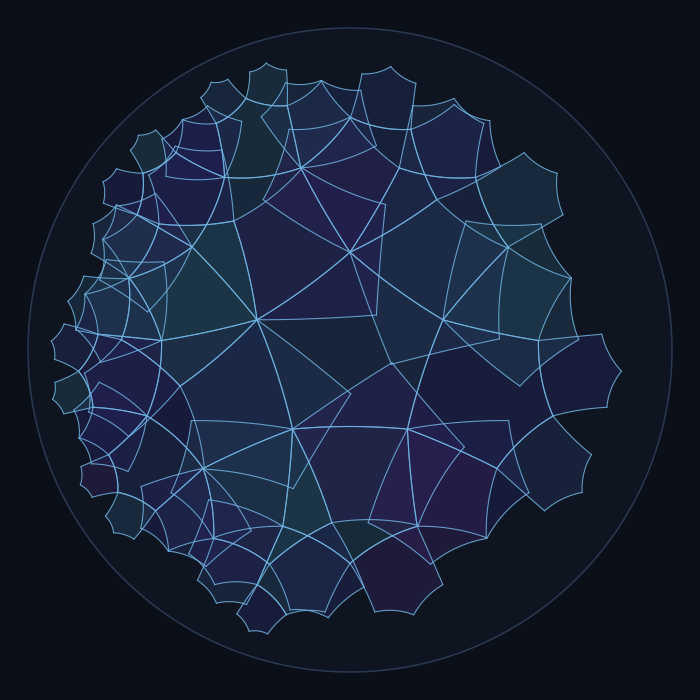

{5,4} — pentagons, four to a corner
a patch of the hyperbolic tiling where regular pentagons meet four at every vertex. in flat space five pentagons can't fit around a point without a gap; here the space curves so they do, and everything gets smaller toward the edge of the poincare disk.

built by taking one regular pentagon at the centre and reflecting it across each edge, over and over. each reflection is a circle inversion in a circle orthogonal to the boundary — that's what keeps every edge a geodesic, a straight line in the geometry even when it bows in the drawing.
60 pentagons. the angles are exact: vertex angle 2π/4 = 90° is what makes four of them meet cleanly. ← everything